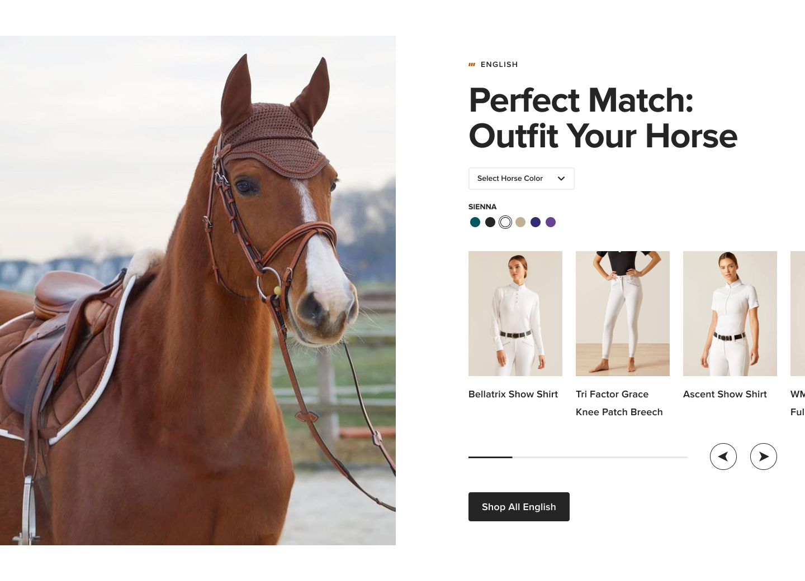

Introduce Yourself
SEPT '23Gendered CLPs
DEC '24Equestrian Reimagined
DEC '24

New Color Module
DEC '24Foot Size Concepts
NOV '24
Barcelona Study Abroad
MAY '22
Barcelona Study Abroad
MAY '22
Visualize Patient Data
APR '23
Work Customer Flow
JUL '25
VSA Graphic
APR '22Work PLP Redesign
JUL '25Equestrian PDP Redesign
DEC '24Benchmarking Automator
JUL '25